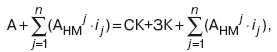
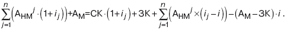

| Инфляция – это процесс, характеризующийся повышением общего уровня цен. Инфляция вызывает убытки по денежным активам, приводит к значительным изменениям стоимости других активов и пассивов. Игнорирование влияния инфляционных процессов на оценку активов и пассивов предприятия приводит к искажению достоверности информации финансовой отчетности, неправомерным результатам и выводам анализа динамики ее показателей. В условиях инфляционной экономики показатели бухгалтерской отчетности подлежат корректировке, для чего используются значения темпов инфляции. Темп инфляции представляет собой изменение общего уровня цен, выраженное в процентах. Механизм корректировки бухгалтерской отчетности связан с трудностями определения: собственно методов корректировки (пересчета) на уровень инфляции показателей финансовой отчетности; показателей и методов измерения инфляции; последовательности проведения корректировочных процедур. Наиболее правомерным считается использование методов корректировки отчетности, основанных на динамике уровня цен. В мировой практике существуют три основных метода корректировки влияния изменения цен на статьи финансовой от четности предприятия: 1. Модель учета в постоянных ценах, предусматривающая оценку объектов бухгалтерского учета в денежных единицах одинаковой покупательной способности (General Purchasing Power – GPP). Основной целью корректировки метода GPP является представление финансовой отчетности в единообразных единицах покупательной способности. При этом не учитывается динамика цен по отдельным компонентам активов и пассивов. Формула корректировки при пересчете показателей финансовой отчетности (инфлирование): Ki′ = Ki ⋅ IЦ, где Ki′ – скорректированное (пересчитанное) значение показателя i-го периода; Ki – первоначальное значение показателя i-го периода; IЦ – индекс цен отчетного периода по сравнению с i-м периодом. Модель корректировки бухгалтерского баланса методом GPP: А+АНМ⋅i=СК⋅(1+i)+ЗК−(АМ−ЗК)⋅ i , где А – величина актива исходного бухгалтерского баланса; АНМ – величина немонетарных статей актива исходного бухгалтерского баланса; СК – собственный капитал; ЗК – заемный капитал (долгосрочные и краткосрочные пассивы); АМ – величина монетарных статей актива исходного бух галтерского баланса; i – величина инфляции, коэффициент 2. Модель учета в текущих ценах, предусматривающая пере оценку объектов бухгалтерского учета в текущую (рыночную) стоимость (Current Value Accounting – CVA, или Current Cost Accounting – CCA). Является более точной, поскольку подразумевает пересчет статей финансовой отчетности исходя из продажных цен и формирование текущих оценок статей по пересчитанным стоимостям активов и пассивов предприятия с учетом их реальной рыночной стоимости на текущий момент. Корректировка статей баланса проводится по индексам цен, рассчитанным по конкретным позициям активов и пассивов, что является более трудоемким процессом по сравнению с методом GPP. Модель корректировки бухгалтерского баланса методом CCA:  где А – величина актива исходного бухгалтерского баланса; ij – величина инфляции j-го немонетарного показателя актива исходного бухгалтерского баланса, коэффициент; n – число немонетарных показателей актива исходного бухгалтерского баланса. 3. Модель, представляющая собой комбинацию первых двух методов (моделей), предполагает применение общего индекса цен к пересчету величины собственного капитала и индивидуальных индексов цен к пересчету стоимости немонетарных статей актива. Модель корректировки бухгалтерского баланса:  Вопросы об использовании той или иной модели являются дискуссионными. |